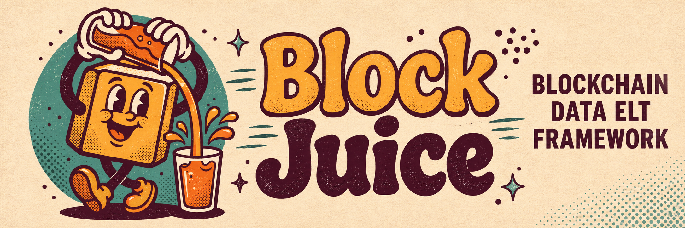

Self-hosted ELT for chain data
BlockJuice loads chain data into your Postgres, transforms it with dbt and schedules the work with Dagster. Balances, transfers, trades, prices and labels sit next to the rest of your data, under keys and policies you set.
Why
If you advise funds, treasuries or protocol teams, you know where on-chain work gets awkward. Explorers are fine for a quick look. Shared analytics platforms work until you need to own the query, the join or how long the data is kept.
Raw rows, marts, run logs and answers live in a warehouse and repo you run. When an auditor or a client asks how a number was built, you show them the model and the run that produced it.
The Claude Code skill (/bj <question>) maps a question onto marts, builds any that are missing, runs the checks and writes an answer folder with the value and the method. From there it can make a PDF, a spreadsheet or a Google Doc.
Another wallet list, EVM chain or protocol is bj new-source, a chain in dbt and a schedule. The shared library already handles cursors and dead letters, so your time goes to the question.
bj doctor checks your env and services before you start debugging. Grafana and the ops.* run log show ingestion and dbt side by side. Failed calls are kept as dead letters, not dropped.
What ships
Each mart holds one kind of fact for every chain and asset it covers, built for many questions rather than one.
| You need | What ships | Mart |
|---|---|---|
| Point-in-time balances | ETH, ERC-20, SOL, SPL, BTC | analytics.latest_balances |
| Transfer history | ERC-20 on Ethereum, Arbitrum, Base, with each side labelled | analytics.erc20_transfers, analytics.classified_transfers |
| DEX activity | Uniswap v2, v3 and v4 trades | analytics.dex_trades |
| Address labels | Code reads plus exchange seeds: exchange, contract or EOA | analytics.address_labels |
| Token metadata | Name, symbol and decimals on Ethereum, Arbitrum, Base | analytics.tokens |
| Token prices | Binance and Coinbase candles; Chainlink rounds on Ethereum, Arbitrum, Base | analytics.token_prices, analytics.oracle_prices |
| How it runs | TypeScript extract and load, dbt, Dagster, plus Docker for the warehouse, eRPC, Dshackle and monitoring | |
| How you drive it | The bj CLI (dev, doctor, run, answer, report, new-source) and the blockjuice skill |
How it runs
A TypeScript source writes raw rows into raw.<source>_<table>. dbt reads them as sources and builds staging views and marts in analytics. Dagster runs both as one asset graph, one pipeline per mart folder, on a cron you choose.
Quick start
You need Node 24 and pnpm (both pinned in mise.toml), uv and Docker.
# set up the checkout: copies .env files, installs packages, parses dbt
uv run --project orchestration bj install
# start the warehouse, eRPC, Dshackle, monitoring and Dagster
uv run --project orchestration bj dev
# then, in Claude Code
/bj How much ETH do the tracked wallets hold right now?bj install, start the stack with bj dev, then open the Dagster UI at localhost:3000.addresses.json.Latest
Analysis posts are answer folders turned into pages. Each one shows the value, how it was counted and the run that produced it.